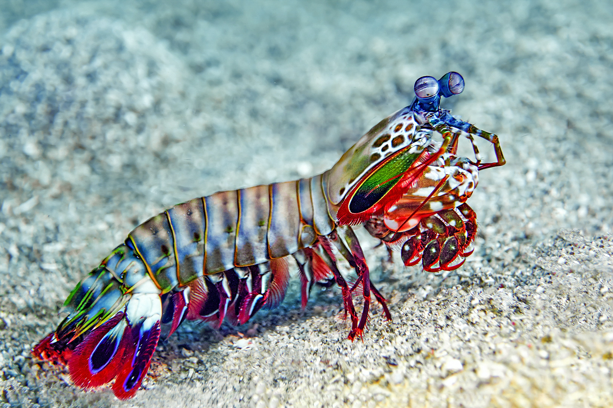

The Mantis Shrimp

The mantis shrimp is a vibrant, aggressive marine crustacean that possesses one of the most powerful strikes in the animal kingdom. With specialized club-like appendages, some species can punch with the force of a .22 caliber bullet, easily breaking shells and even cracking aquarium glass. Their eyes are among the most advanced in the animal world, capable of detecting an incredible range of colors, including ultraviolet and polarized light. Mantis shrimp are territorial predators that live in burrows, using their speed and strength to ambush prey with unmatched precision.